World Machine to UE4 using World Composition
Contents
Overview
Author: ( )
Creating worlds can be a long and detailed process. The time it takes to create worlds can be lessened with the proper steps. The process covered below creates tiled terrains in World Machine, exports them in the correct format with weightmaps, and imports them into UE4 using the world composition tool. Feel free to edit any information that is inacurate or add new information that may be relevant.
Terrain Creation in WM
Terrains can be created in many different programs and can even be created in UE4 itself. For this tutorial we will be using World Machine to create every part of the terrain. Below is the process of creating a quick terrain with an 8km by 8km size when imported into UE4.
Generators
In world Machine there are multiple ways to create terrains. One way is a procedural way using perlin or any other kind of noise generators. Another way is to import a heightmap created in another program as a basis. For the purposes of this tutorial we will be using the noise generators. Follow the steps below to create a terrain using a generator.
- Clear the world area to start fresh.
- Drag an advanced perlin noise device into the world.
- Double click on the device and change the parameters around to get the terrain you want.
Natural Processes
One of the major features of World Machine is the natural processors. These include erosion, thermal weathering and more. These give your terrains that real world look. Follow the steps below to add erosion to the terrain.
- Drag an erosion device into the world.
- Connect the ouput of the advanced perlin noise device to the erosion input.
- Double click on the erosion device and edit the settings to get the look you want.
Terrain Export in WM
To export the terrain from World Machine follow below. The export process is ran once exporting multiple files used for weightmaps for textures as well as the main heightmaps.
Tiled Build Setup
Under "World Extents and Resolution" you will see a "Tiled Build Options" tab (This option is only available in World Machine Professional). Set the following options.
- Tile Resolution - Custom 2017 x 2017
- Tiles per Side - 4 x 4
- Blending Percentage - 100%
- Share edge vertices - tick
- Flip Y-axis orientation - tick
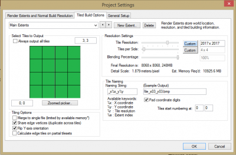
General Setup
Under the "General Setup" tab make note of the maximum elevation used. You can change this to your needs but remember that number, it will be used when importing into UE4.
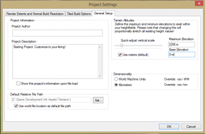
Height Output Setup
Ensure the final height output is attached to a Height Output node. Ensure the settings follow the settings below:
- Filename - Filepath/Planet_Name
- Participate in tiled builds - tick
- High Precision - RAW16
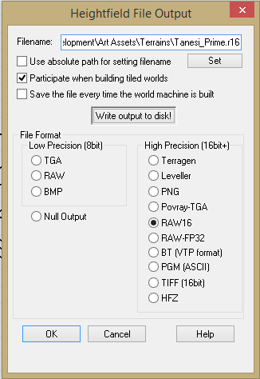
Weightmaps Setup
Setup whatever weightmap selections you wish to use. Follow the steps below to setup weightmaps based off terrain angle.
- Create 3 Select Slope Nodes
- Attach the Primary Output node to each select slope input node.
- Set the angle selections for each select angle nodes.
- Attach the outputs from the select angle nodes to a height output node.
- Set a distinct name for each output and make sure it is tileable. Below are some screen shots for each step.
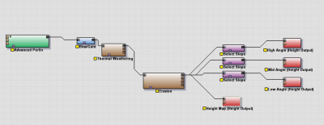
 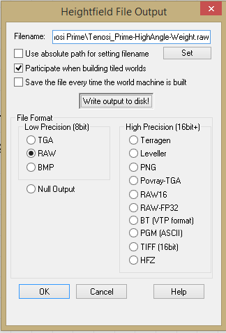
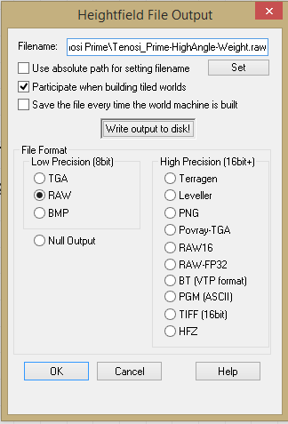
Build
Now just click the tiled build option and let it run.
Terrain Material Setup in UE4
The material for the terrain should be setup first. Follow the steps below to setup a terrain ready to accept the weightmaps exported earlier.
- Create a new material in UE4.
- Create a Landscape Layer Weight node for each weightmap you exported from World Machine. In the example in the previous section we exported 3 weightmaps based of High, Mid, and low angles.
- Name the Layer Weights something you will remember and can associate with the weightmaps exported from World Machine.
- Connect the output of the layer you want on the bottom to the "Base" input of the layer you want in the middle.
- Connect the output of the layer you want in the middle to the "Base" input of the layer you want on top.
- Connect the output of the layer you want on top to the "Base Color" input on the material node.
- Drag the textures you want to use for each layer into the material editor.
- Connect the outputs of the textures to the associated "Layer" input on the landscape layer weight nodes.
- Add a Landscape Layer Coords and attach the output to the "UVs" input of each texture node.
- In the Landscape Layer Coords set the tiling to whatever you want. Start with 25 and go from there.
- If you wish to use Normal Maps for the textures duplicate the process above. Instead of connecting the output of the last layer weight node to the "Base Color" input, connect it to the "Normal" input on the material node.
- Below is an example node structure.
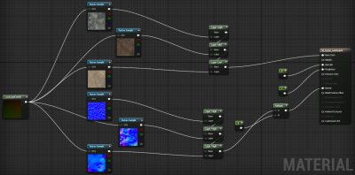
World Composition in UE4
World composition allows smaller chunks of the planet be loaded at runtime when the player is close enough to that chunk. Below are the steps to get the terrain into the world.
Persistent Level Setup
To setup the persistent level follow the steps below:
- Create a new level with a sky-box pre-built or not.
- Save the file with the Planet or location name.
- Open the world settings and check the box labeled "Enable World Composition"
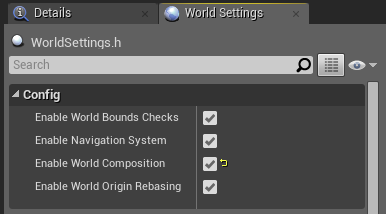
Tiled Landscape Import
To import a tiled landscape follow the steps below
- Open the levels window.
- Click the Levels drop down menu in the upper-left of the levels window.
- Select "Import Tiled Landscape..."
- Click the "Select heightmap Tiles..." button.
- Navigate to the folder where you saved the raw heightmap images from World Machine
- Select all the tiled files. (e.g. Planet_Name_x0_y0)
- Change the Z scale. Times the world height used from World Machine by 0.1953125 and enter that number in Z scale.
- Select the Material created earlier. Once selected it should give you the weightmaps option.
- Now click the "Select Weightmap Tiles..." button.
- Navigate to the folder where you saved the raw weightmap images from World Machine
- Select all the tiled files for each weightmap. (e.g. Planet_Name_HighAngle-x0_y0)
- Then click "Import"
- Select all the Planet_Name_x#_y# levels in the Levels window
- Right click and select load to see if the imported properly.
- Below are some images of the process.
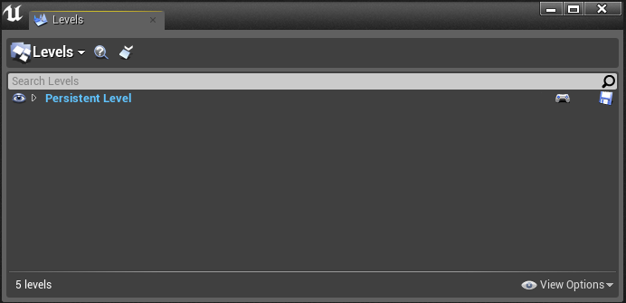 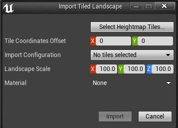 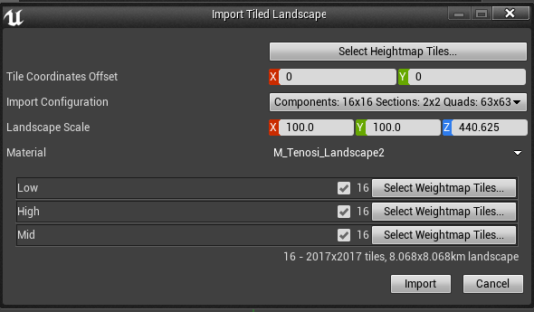 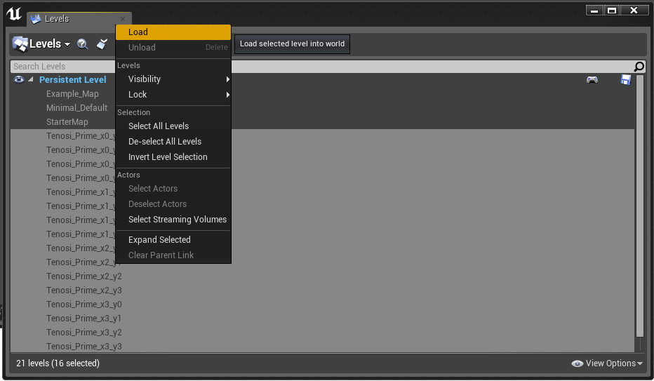
Terrain in UE4
Below are the images of the terrain fully loaded into UE4 using the process above.
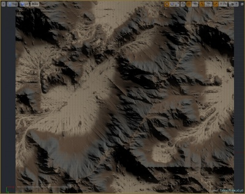 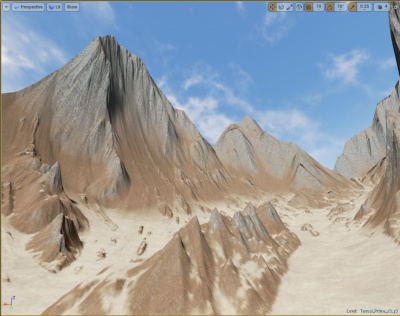